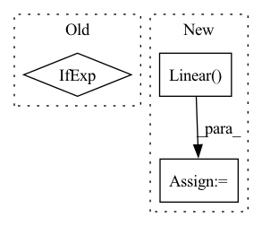

Pattern ID :5370

Before Change
ConvOut1d(
channels=out_channels,
kernel_sizes=kernel_sizes_out,
)
if exists(kernel_sizes_out)
else nn.Identity(),
)
def get_channels(
After Change
if use_context_time or use_context_features:
context_mapping_features = channels * 4
self.to_mapping = nn.Sequential(
nn.Linear(context_mapping_features, context_mapping_features),
nn.GELU(),
nn.Linear(context_mapping_features, context_mapping_features),
nn.GELU(),
)
In pattern: SUPERPATTERN
Frequency: 5
Non-data size: 3
Instances
Fragment ID: 19121394
Project Name: archinetai/audio-diffusion-pytorch
Commit Name: 3c710edf168da06dcc89c23ef12023d0f8b63043
Time: 2022-09-21
Author: flavio.schneider.97@gmail.com
File Name: audio_diffusion_pytorch/modules.py
M Class Name: UNet1d
N Class Name: UNet1d
M Method Name: __init__(23)
N Method Name: __init__(21)
M Parent Class: nn.Module
N Parent Class: nn.Module
M File Name: audio_diffusion_pytorch/modules.py
N File Name: audio_diffusion_pytorch/modules.py
M Start Line: 823
M End Line: 938
N Start Line: 842
N End Line: 997
'>
Before Change
in_ch = widths[i]
out_ch = widths[i + 1]
fstride = fstrides[i]
reduce_ = "channels" if i == 0 else "frequencies"
freqs = freqs // fstride
self.enc.append(
EncLayer(
After Change
// )
self.inner_ch = out_ch
self.gru = nn.GRU(freqs * out_ch, gru_dim, num_layers=3)
self.gru_fc = nn.Linear(gru_dim, freqs * out_ch)
self.gru_skip = nn.Conv2d(out_ch, out_ch, 1)
self.dec = nn.ModuleList()
for i in range(self.depth - 1, -1, -1):
'>
Fragment ID: 19121396
Project Name: rikorose/deepfilternet
Commit Name: a006640875e1cd0ecad680c379a29276a62a5452
Time: 2022-04-12
Author: h.schroeter@pm.me
File Name: DeepFilterNet/df/multistagenet.py
M Class Name: FreqStage
N Class Name: FreqStage
M Method Name: __init__(11)
N Method Name: __init__(11)
M Parent Class: nn.Module
N Parent Class: nn.Module
M File Name: DeepFilterNet/df/multistagenet.py
N File Name: DeepFilterNet/df/multistagenet.py
M Start Line: 317
M End Line: 363
N Start Line: 317
N End Line: 373
'>
Before Change
self.config = config
self.embeddings = RoFormerEmbeddings(config)
self.encoder = RoFormerEncoder(config)
self.pooler = RoFormerPooler(config) if add_pooling_layer else None
self.init_weights()
def get_input_embeddings(self):
After Change
self.embeddings = RoFormerEmbeddings(config)
if config.embedding_size != config.hidden_size:
self.embeddings_project = nn.Linear(config.embedding_size, config.hidden_size)
self.encoder = RoFormerEncoder(config)
self.init_weights()
'>
Fragment ID: 19121387
Project Name: junnyu/roformer_pytorch
Commit Name: 0cb5500e1ca9c8634d63a5231883b1a99ef0f7f8
Time: 2021-05-17
Author: 573009727@qq.com
File Name: src/roformer/modeling_roformer.py
M Class Name: RoFormerModel
N Class Name: RoFormerModel
M Method Name: __init__(2)
N Method Name: __init__(3)
M Parent Class: RoFormerPreTrainedModel
N Parent Class: RoFormerPreTrainedModel
M File Name: src/roformer/modeling_roformer.py
N File Name: src/roformer/modeling_roformer.py
M Start Line: 643
M End Line: 648
N Start Line: 810
N End Line: 813
'>
Before Change
self.to_q = nn.Linear(dim, dim, bias = False)
kv_dim = self.dim_head if one_kv_head else dim
self.to_k = nn.Linear(dim, kv_dim, bias = False)
self.proj_k = nn.Parameter(init_(torch.zeros(seq_len, k)))
After Change
self.proj_v = nn.Parameter(init_(torch.zeros(seq_len, k)))
self.dropout = nn.Dropout(dropout)
self.to_out = nn.Linear(dim_head * heads, dim)
def forward(self, x, context = None, **kwargs):
b, n, d, d_h, h, k = *x.shape, self.dim_head, self.heads, self.k
'>
Fragment ID: 19121385
Project Name: lucidrains/linformer
Commit Name: 6449082dbf683beae01505350def842814c3a965
Time: 2020-07-12
Author: lucidrains@gmail.com
File Name: linformer/linformer.py
M Class Name: LinformerSelfAttention
N Class Name: LinformerSelfAttention
M Method Name: __init__(9)
N Method Name: __init__(8)
M Parent Class: nn.Module
N Parent Class: nn.Module
M File Name: linformer/linformer.py
N File Name: linformer/linformer.py
M Start Line: 52
M End Line: 56
N Start Line: 47
N End Line: 71
'>
Before Change
nn.ReLU(),
nn.Linear(m_dim * 4, 1),
Rearrange("... () -> ..."),
nn.TanH() if norm_coor_weights else nn.Identity()
)
self.rel_coors_norm = CoorsNorm() if norm_rel_coors else nn.Identity()
After Change
self.rel_coors_norm = CoorsNorm() if norm_rel_coors else nn.Identity()
self.to_coors_out = nn.Sequential(
nn.Linear(heads, 1),
Rearrange("... () -> ...")
)
'>
Fragment ID: 19121391
Project Name: lucidrains/en-transformer
Commit Name: af1cb7ebc156c67f0938d915840e079bb3073c24
Time: 2021-03-27
Author: lucidrains@gmail.com
File Name: en_transformer/en_transformer.py
M Class Name: EquivariantAttention
N Class Name: EquivariantAttention
M Method Name: __init__(1)
N Method Name: __init__(1)
M Parent Class: nn.Module
N Parent Class: nn.Module
M File Name: en_transformer/en_transformer.py
N File Name: en_transformer/en_transformer.py
M Start Line: 151
M End Line: 155
N Start Line: 151
N End Line: 162